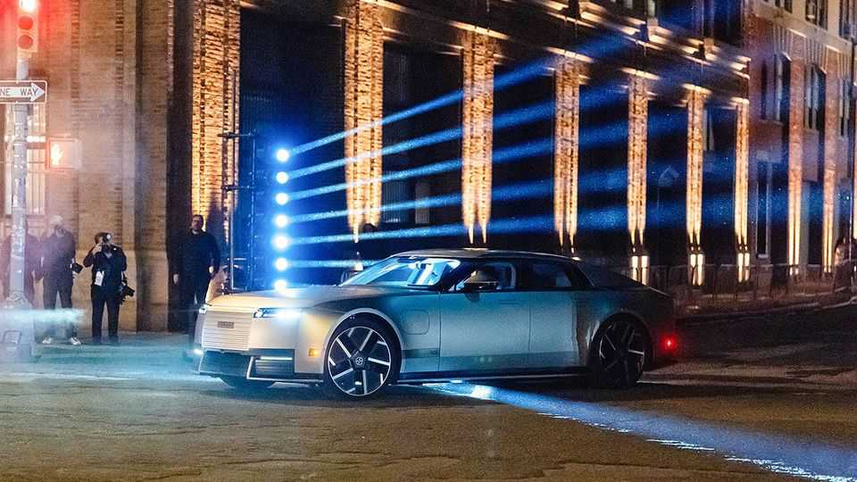
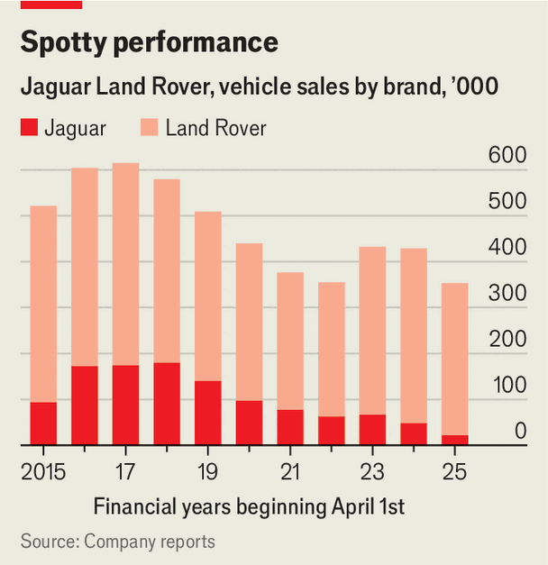

Jaguar’s new car is its last shot at survival
The British marque wants to reinvent itself as a maker of luxury EVs

Oct 8th 2026
“Have you ever seen a car like this before?” asked one of the designers of the new Type 01 Jaguar as the covers were pulled off the 1,000-horsepower electric saloon in New York on October 6th. The “next chapter in the Jaguar story” is long, low and imposing. Despite claims of “a clear lineage to the great Jaguars of the past”, the marque’s legacy was mostly played down. Its reinvention as an all-electric brand that is further upmarket than in previous incarnations is as much about breaking with the past as harking back to former glories. The audacious transformation is Jaguar’s last chance at survival. If the new customers it is seeking are not enamoured, claims that the vehicle is “01 of a kind” might just turn out to be true.
What to do with Jaguar has furrowed the brows of car executives for years. Jaguar Land Rover, shortened to JLR since 2023, has always been far more reliant on the other side of its business, which includes the high-end Range Rover, whose flagship SUVs now start at well over £100,000 ($132,000). The Jaguar brand has probably never made a profit for Tata Motors, the carmaking arm of the Indian conglomerate that bought JLR from Ford in 2008 for $2.3bn.
Despite its heritage of sporty models—such as the E-Type, launched in the 1960s—Jaguar’s saloon cars were long the brand’s biggest sellers. Over time, however, they acquired a staid image of pipe-smoking bank managers and golf-club car parks. Tata invested heavily in revamping Jaguar’s range in order to take on Germany’s premium carmakers, but the effort misfired. Although it managed to produce vehicles to a similar design standard and build quality, most drivers stuck with their Teutonic machines. In 2018, at its peak, Jaguar sold around 180,000 cars, compared with well over 2m apiece for bmw and Mercedes-Benz. Sales plummeted in the years that followed (see chart).

The latest reinvention, which began in 2021, is an even bigger gamble. JLR has spent at least £2.25bn relaunching Jaguar as a battery-powered brand. In 2024 it halted production of its existing line-up of models. In November of that year it ran a marketing campaign with a controversial advert featuring androgynous models in brightly coloured futuristic outfits but no car, which outraged petrolheads and even provoked Donald Trump to weigh in (”seriously woke” was his verdict). The campaign’s two concept cars (bright pink and baby blue) were portrayed by critics as either audacious or mad.
Traditionalists (few of whom had ever owned a Jaguar) bristled at a new rounded typeface and the dropping of the growling-cat logo. The agency behind the ad was replaced, and JLR’s powerful design chief, Gerry McGovern, left the company in unexplained circumstances.
Now the question is whether the new-look Jaguar can convince enough of the younger customers the brand is targeting to part with at least £130,000 for a Type 01, which is around four times the price of the cheapest Jaguar when production ceased in 2024. Felipe Munoz, an industry analyst, reckons that at this price the car will be “very niche”. It does not help that demand for high-end electric vehicles is uncertain—poor sales of the Porsche Taycan are one reason behind the German brand’s recent struggles—and that there is mounting competition from rivals.
Motorists after a pricey EV might prefer the new Mercedes amg-gt or Bentley’s first electric car, the Torcal. Some may even opt for Tesla’s revamped Roadster, due to be unveiled on October 15th, which apparently is fitted with rocket thrusters.
The positioning of the new Jaguar also points to an enduring problem for jlr: the overlap between its brands and the search for new segments to broaden the profitable side of its business. Range Rover is expanding its collection of electric suvs, which are around the same price as the Type 01, and even intends to launch a battery-powered saloon that would directly compete with the new Jag.
The bet on Jaguar threatens to drain resources and distract attention at a time of strain on JLR. A cyber-attack a year ago hit production at the company for several weeks. Pre-tax profits slumped to just £14m in the year to March 2026, compared with £2.5bn the year before. Sales in China have crashed and tariffs have hurt business in America, the company’s largest market, which takes up nearly 30% of volumes. In response jlr announced in September that it would cut costs by axing 4,000 jobs, around a tenth of its workforce.
Jaguar's boss, Rawdon Glover, says that “success will be measured in the tens of thousands of vehicle sales annually”. There are rumours of plans to use the new car’s electric platform for an suv and a coupe. If the Type 01 fails to find enough buyers, however, it may turn out to be the final chapter in the Jaguar story. ■